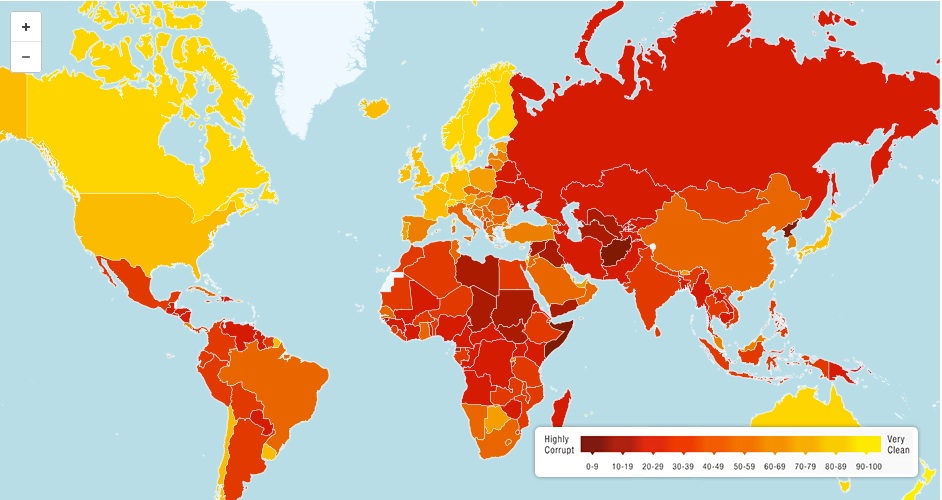

What is Poaching?
National Geographic defines poaching as “the illegal trafficking and killing of wildlife. Sometimes animal or plant parts are sold as trophies or ‘folk medicines’ and sometimes they are sold as pets or houseplants. With more tigers kept captive than living wild, the scope of poaching can not be overstated.” Poaching illegal hunting animals for material such as their fur and tusks but poaching also includes the illegal pet trade. A common known example is hunting elephants for their ivory and tigers for their skin and bones but poaching happens to many creatures.
How are Animals Affected?
Many animals are affected by poaching. From marine turtles to timber tree, they are over-exploited and hurt. Poaching causes animal numbers to drop faster than they can naturally recover. Hunting is not the only reason for endangerment. One example is elephants. Elephants are endangered because of poaching for ivory, habitat loss and fragmentation due to human population expansion and land conversion and, human-elephant conflict. Poaching is not the threat but quite a big one. Poaching aims for keystone animals who are big parts of their ecosystems. Unlike humans, animals living in the wild have a much harder time with population growth and hunting them can increase that burden.
Where it happens?
Poaching can happen anywhere and to anything. The image below shows poaching level from 2019 across the gloab.
